PROFILE
Born in Brazil and currently live in Tokyo.
I have been studying photography on my own as a hobby, and started working as a professional photographer in 2025.
ブラジル生まれ、東京都在住。
趣味として独学でカメラを学び、2025年より本格的にフォトグラファーとして始動。
好きな食べ物はカレー、スパイス系の料理、ルーローファン、ドーナツ、レモンのチーズケーキ、シナモンロール、かぼちゃなど。
苦手な食べ物は生魚、生玉ねぎ、ニンニク(少量なら可)。
チャイを作るのが得意。匂いや音に敏感でメルヘン思考。
また、ポルトガル語は話せるがサンバは踊れない。
WORKS
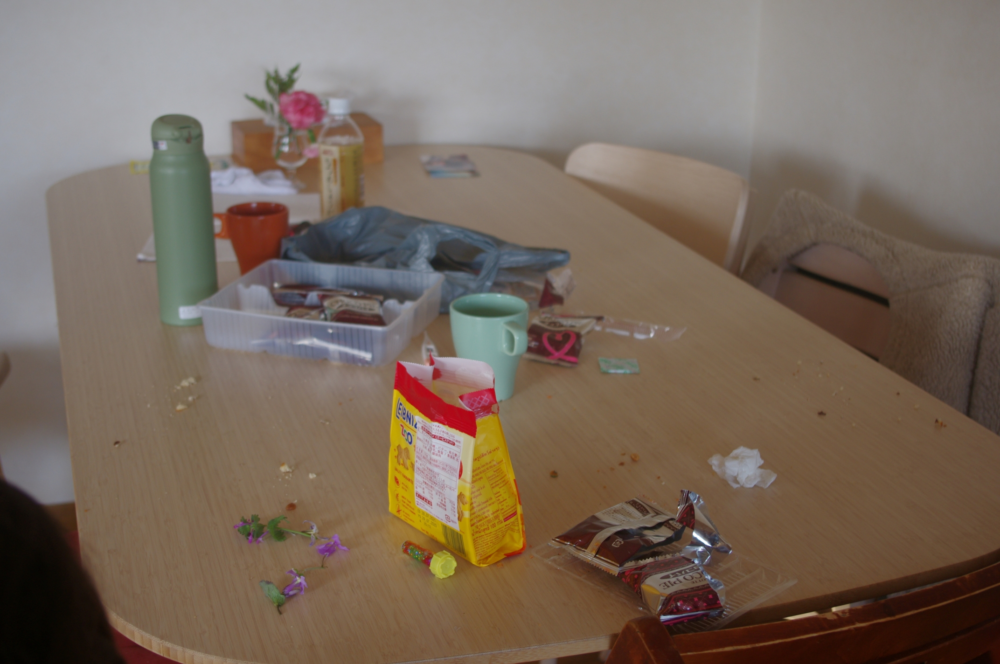
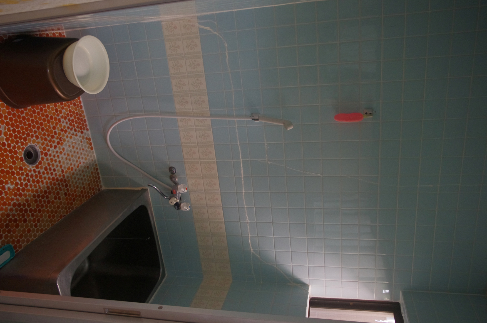
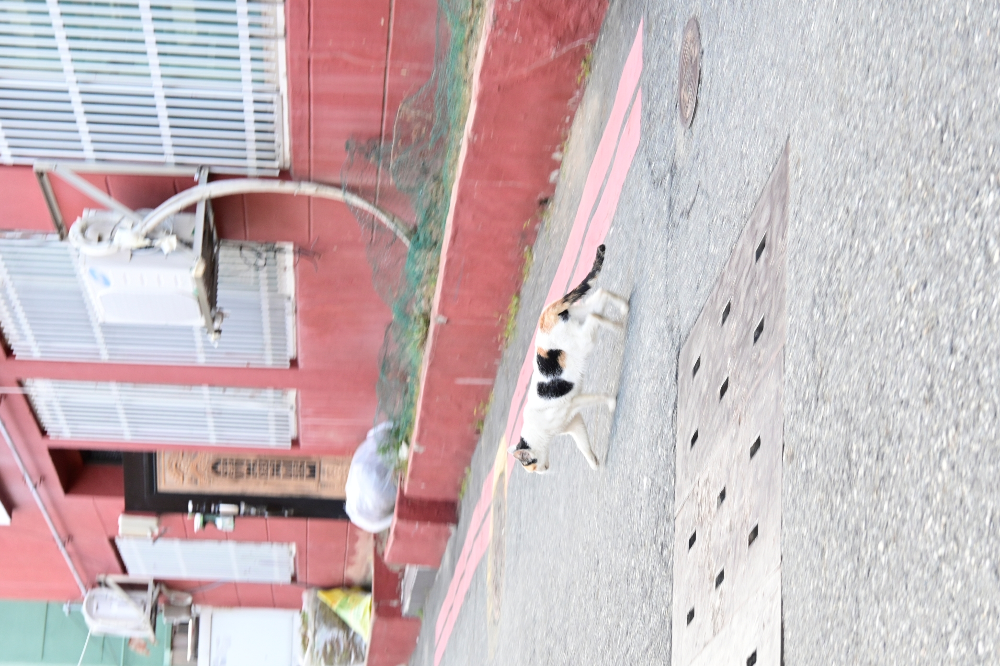
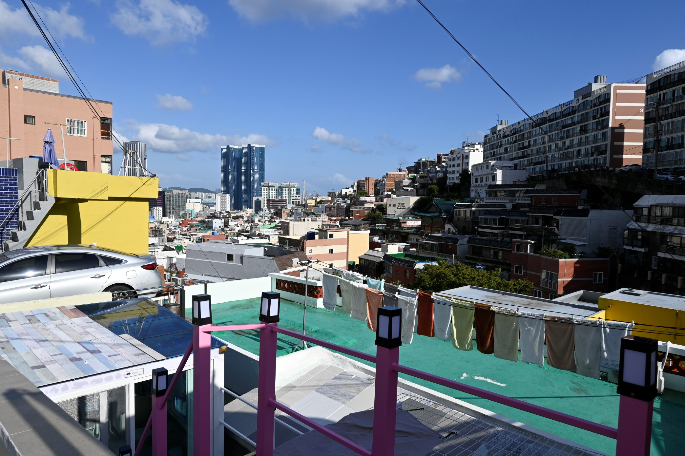
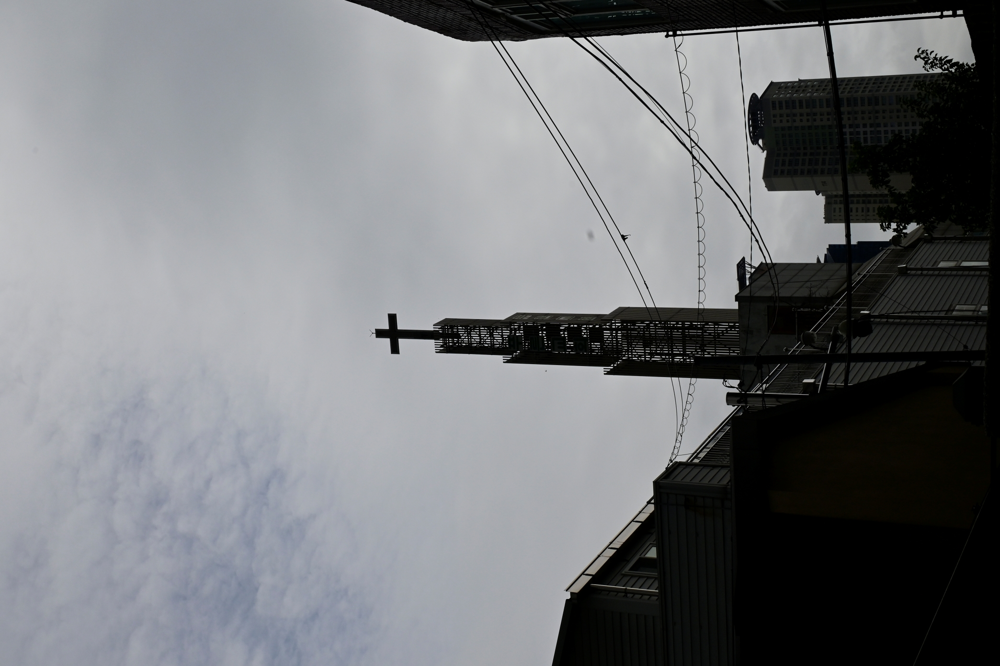
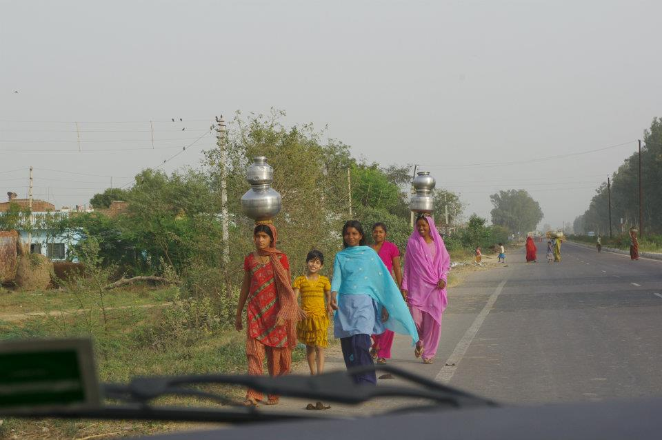
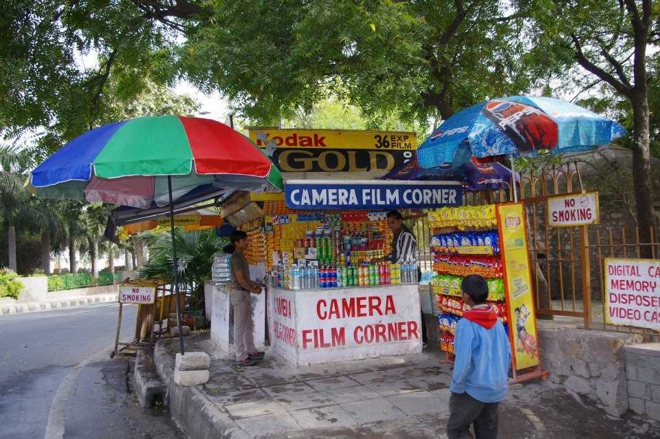
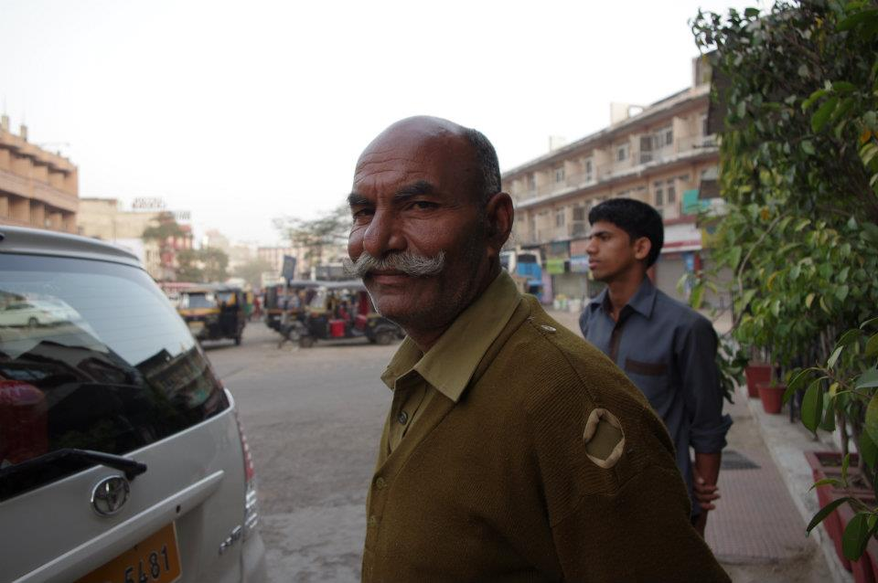
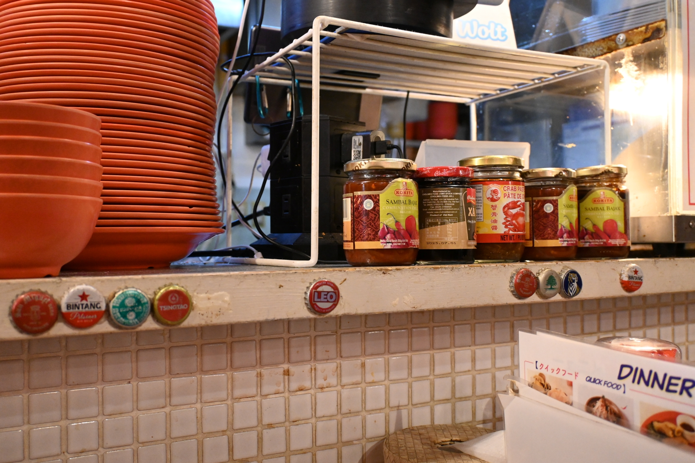
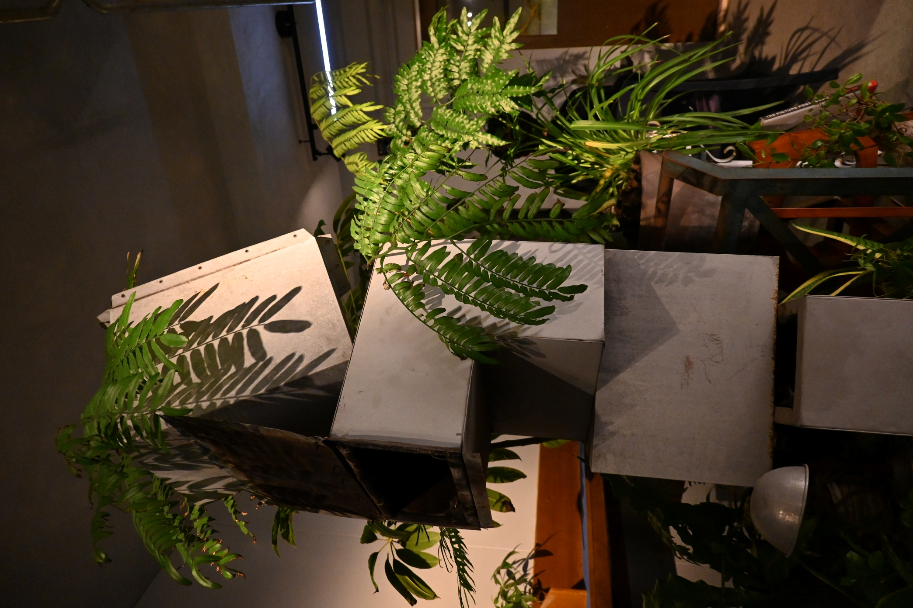
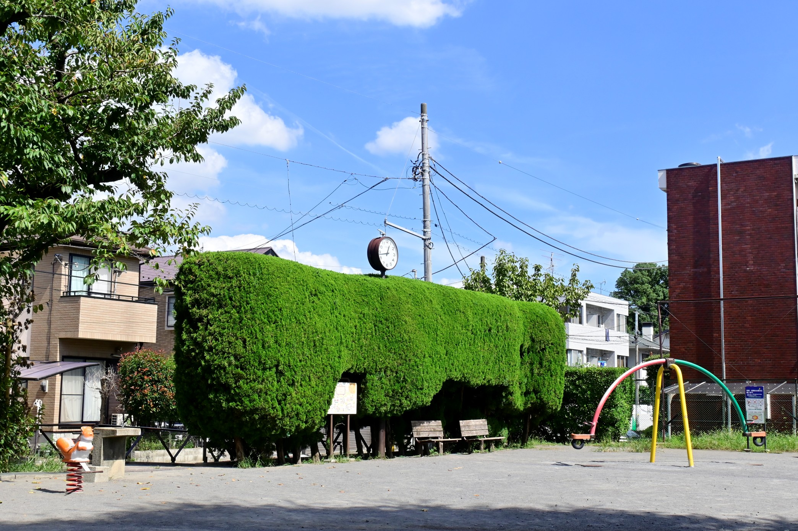
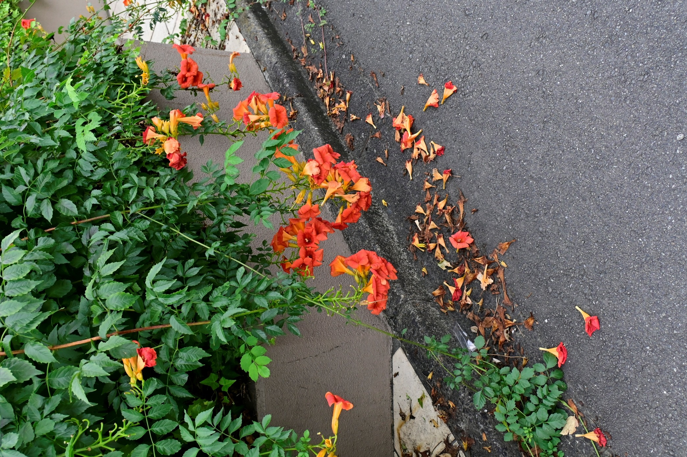